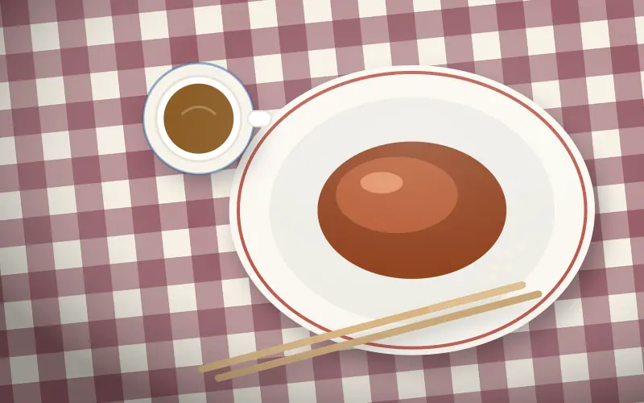

粵 · Cantonese23%OFF
Legendary · Sha Tin · Sha Tin
Lung Wah Hotel
龍華酒店
Roast pigeon + bean curd pudding紅燒乳鴿 + 豆腐花
$98$128Save HK$30
64/100
HK Cheap Eats Value Score · Average valueEstimated from the editors’ rating, price vs similar cantonese places and MTR access. Portion size and customer reviews aren’t scored yet. How it’s calculated
- Hours
- 11:00 – 22:00
- Best for
- Lunch
- Nearest MTR
- Sha Tin 沙田 · 4 min walk
- Pay with
- Octopus · Card · Cash
- Cuisine
- Cantonese 粵菜
- Area
- Sha Tin 沙田 · Sha Tin 沙田區
- Status
- Unverified
- Source
- HK Cheap Eats editors
- Listed
- 14 Nov 2026
- Price last checked in store
- Not yet
Picture is an illustration, not a photo of this restaurant. Spotted a wrong price or hours? Suggest a correction in the app.